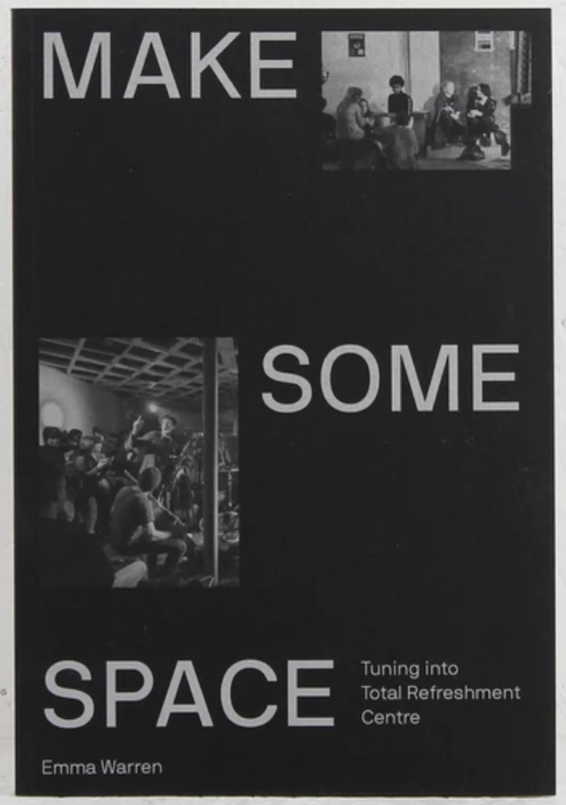

Studio
Recording, mixing and mastering for artists and labels. Available for full productions or individual stages of a record.
- Recording — tracking and sessions
- Production — arrangement, sound design, overseeing the record
- Mixing — session stems to cohesive mix, stereo and immersive where required
- Mastering — final polish for digital and physical
- Tape transfers — running mixes to tape for natural colour and saturation, from subtle to pushed depending on what suits the music
Work spans electronic, experimental, folk, jazz, post-rock and alternative.
Current studio practice covers a production, mix studio in Malta, the London studio at Total Refreshment Centre, and location visiting sessions. Remote mix and master available.
Total Refreshment Centre
Recording studio operated, co-built and run by Capitol K since 2012–2024, ongoing with visiting sessions. Inside the Total Refreshment Centre in Stoke Newington — a community building, event space and music hub. A large body of records from the London scene were tracked and mixed there. Credits connected to TRC appear under the Studio filter on the Work page.

Make Some Space
Tuning into Total Refreshment Centre · Emma Warren
TRC as community building, event space and recording studio is a larger story than a short page can hold. Emma Warren’s book follows the early years — including how the in-house studio took shape.
“The fact that this place was concrete and was in Hackney and had steel girders meant it would sound like London, and that was really important.”
Read a longer excerpt from Chapter Four · A Collapsed Wave
There’s another key character in the Total Refreshment Centre story. His name is Kristian Craig Robinson aka Capitol K, or K as he’s more usually known here. He’s a fine-featured producer and musician with boundless patience built out of decades of experience in London’s independent music and squat culture, tempered with a fantastically withering stare. He spends most of his time at the control desk in the in-house studio, which he co-owns with sound engineer Jack Eveleigh, and can be seen strolling around elegantly transporting a tray of cables and microphones from here to there.
In late 2012 a message popped up on his Facebook page, containing the Gumtree photos of a derelict space along with a question: did he want to run a studio in Hackney? K had just packed up a studio on Platt’s Eyot, a tiny island on the Thames near Sunbury and wasn’t in the mood to build another one straight away, but something piqued his interest. He started visiting TRC, which he describes as being a “fucking bombsite of mad parties for the first couple of months”.
A key moment in the transformation from mad party bombsite into what became TRC in its capacity as a multi-layered, music-making machine came with the arrival of a soundproof window. It was built for a studio that didn’t exist, to link an imagined control room to the live room…
The window would act as a signal that things were starting to evolve. “I kept coming to visit,” says K. “They kept messaging me. They started building that window. And at that point I was like it’s been a year and they haven’t burned the place down yet. Maybe there’s a chance I could put a studio in here.”
K’s first stop was Hugo’s Speaker Palace, just down the road… He found a 1978 Allen & Heath mixing desk, brought it up to TRC, and began the process of rewiring, coming in for a couple of days at a time and slowly putting equipment in place.
Things were still extremely loose around the edges when the studio started operating around 2014. The lock would be broken on the front door and people would just walk in off the street, says K. “For years, the joke of it was that you’d be in the studio, and someone would just walk through the door. You’d be like, ‘How did you get in?’ They’d go, ‘Oh, the front door was open.’ The front door was open for like four years.”
As a graduate of London’s squat schools — he once built a studio in the London Symphonia’s occupied rehearsal rooms — K was well placed to navigate the terrain. “I was used to dealing with the problems of spontaneous spaces,” he says, “and I have immeasurable tolerance for the complexity of characters. My role as literally the oldest person in the building was basically to be as patient as possible, and to harbour as much of it as possible.”
An abandoned pie factory in south London known as Cold Storage provided a kind of mythic influence… “When I saw the room at TRC had concrete floors I was like, okay, this is really good. I hated the whole thing of recording studios being out in the woods. The fact that this place was concrete and was in Hackney and had steel girders meant it would sound like London, and that was really important.”
The relationship between the in-house studio, where a stream of bands and individuals came to rehearse and record, the live music and the individual artist studios made for an unusually integrated environment… It was a materialised feedback loop, says Dan ‘Danalogue’ Leavers of The Comet Is Coming, a “collapsed wave of energy and inspiration”.
Excerpt from Make Some Space — Tuning into Total Refreshment Centre by Emma Warren. © Emma Warren 2019. Used with acknowledgement; support the book via the link above.
Studio Plateaux — Platt’s Eyot
In the late 2000s Kristian ran the DIY studio Studio Plateaux on Platt’s Eyot, a Thames island between Hampton and Molesey. Sessions there included production and engineering for 4AD’s Platts Eyot recordings — among them Deerhunter’s On Platts Eyott Island (2008) — as well as work with Tune-Yards and Ariel Pink.
Studio Plateaux preceded the move to Total Refreshment Centre in Stoke Newington.
In 2008–09, filming live studio sessions and putting them on YouTube was still unusual. These early 4AD sessions helped set a pattern that later became standard in music marketing.